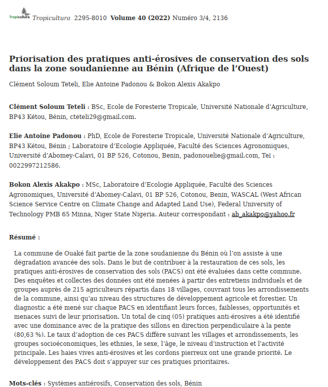

Prioritization of soil conservation antierosion practices in the common Sudanian zone in Benin (West Africa)
Auteurs : Teteli S.C., Padonou E.A. & Akakpo B.A. (2022)
Revue : Tropicultura, Vol 40, Num 3/4
Résumé : Cette étude analyse et hiérarchise les pratiques de conservation des sols pour lutter contre l’érosion dans la zone soudanienne du Bénin. Elle met en évidence les pratiques prioritaires basées sur leur efficacité, leur faisabilité et leur acceptation par les agriculteurs, avec des recommandations concrètes pour une gestion durable des terres.